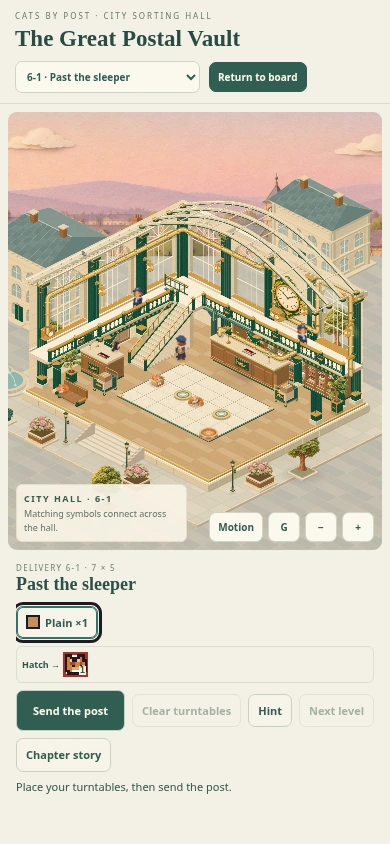
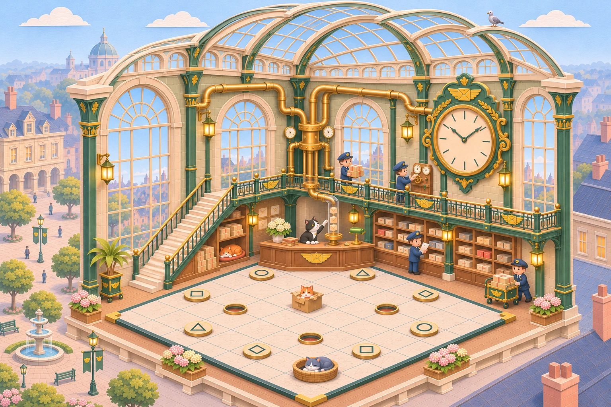

Cats by Post · Great Postal Vault
More of City Hall, above and below
Full-height phone scenery with compact game controls. The expanded view continues from the town skyline into a paved civic approach, with softer light and receiving shadows across the hall.
These comparisons use the same corrected controls, camera, puzzle and scene time. Before shows the previous scenery; After shows the new sky, paving and light. Tall phone includes a 47 px top and 34 px bottom safe area. Short phone is 320 × 568.
The phone framing correction
The earlier review reserved too much space for its interface. The scene now fills the screen behind sparse overlays, so both the skyline and the arrival square have room to appear.

Previous review: a 374 × 438 scene inside a 390 × 844 screen.Current study: the complete 390 × 844 screen carries the scenery.The control footprint was checked against the actual web game. This is a playable scene study; it does not replace the production or native interface.
A connected setting
Thirty-two seconds from the actual phone scene. This canvas recording shows the scenery without the control overlays.
The arrival steps now lead into a continuous stone approach. Paving and paper sky extend beyond the previous scene edges, including at the widest zoom.
Soft directional shadows ground the plinth and galleries. Warm light on the ivory walls and quieter distant buildings add depth while the puzzle symbols remain clear.
The hall keeps its height, existing board angle and authored deliveries. Pinch and pan remain available; the tools menu holds delivery selection, hints, chapter story and view controls.
This is the next visual checkpoint. The full-height composition is ready to judge, while the reference remains the target for richer atmosphere and lived-in detail.
The selected direction

The selected concept continues to guide the hall’s grandness, materials and relationship with the city.